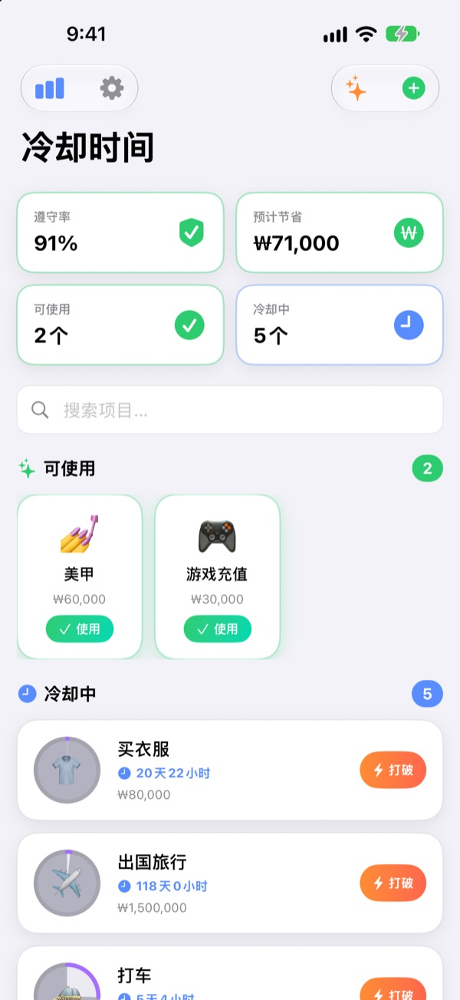
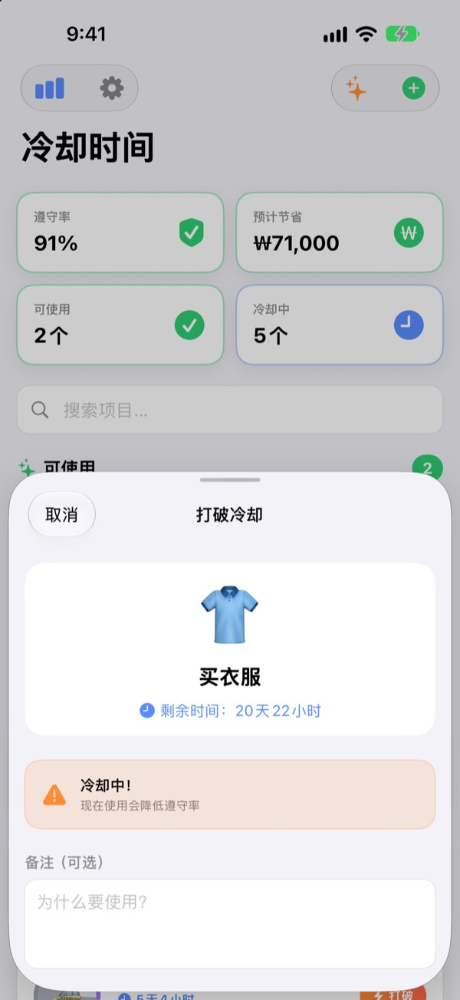
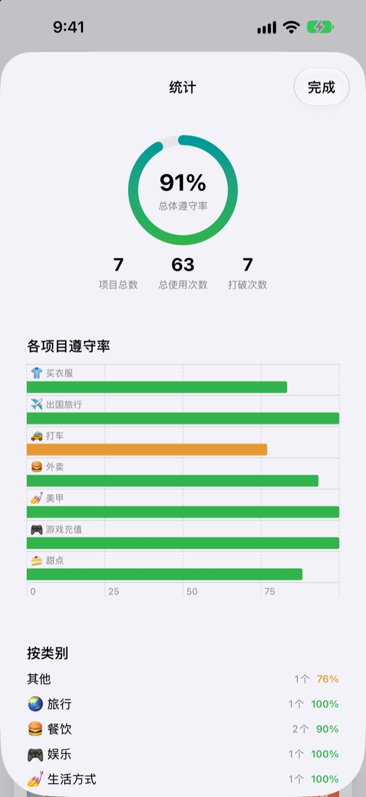
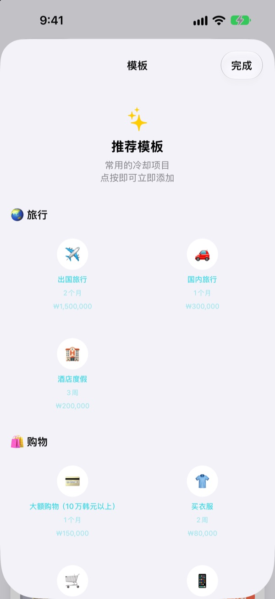

在这里试一试
选一个项目，点按“使用”，然后一天一天往后推。也可以看看在冷却中使用会怎样。
“就这一次”，一周说了四次？
每次打开外卖软件，都觉得好久没点了，可上一次到底是什么时候，其实记不太清。冷却时间会显示你上次使用的时间和下次可以使用的时间，让你按事先定好的规则决定忍不忍，而不是看当下的心情。
打破之前，再想一想
在冷却中想使用时，会显示剩余时间，并提醒你遵守率会下降。
如果还是要用，可以写下原因和实际花费。打破的记录也会如实保留。

忍住多少，数字说话
遵守率、按项目和按类别的记录、打破次数，一个页面全看到。
给项目填上预计花费，还能估算出这个月省下了多少钱。

常用冷却，一点就加
从旅行、购物、餐饮到健康、理财，在推荐模板里挑一个就能直接添加。
冷却过半和结束时都会通知你，主屏幕和锁定屏幕的小组件也能随时查看剩余时间。

三步就能开始
- 1
添加项目
设定名称、表情符号和等待时间（小时、天、周、个月），或者直接从推荐模板里选。
- 2
用的时候点“使用”
冷却从那一刻开始，圆环随即清空。
- 3
收到通知，就能再用
冷却结束时会通知你。第一次记得允许通知就好。
推荐模板里的冷却
- 🌏 旅行
- 出国旅行、国内旅行、酒店度假
- 🛍️ 购物
- 买衣服、冲动消费、电子产品
- 🍔 餐饮
- 快餐、外卖、咖啡馆、甜点、下馆子、夜宵
- 🎮 娱乐
- 游戏充值、电影院、刷剧、演唱会/演出
- 💅 生活方式
- 喝酒、打车、美甲、美发店、按摩/水疗
- 🏃 健康
- 休息日（不运动）、放纵日
- 💰 理财
- 股票交易、彩票
每个模板都预设了合适的周期和预计花费。没有想要的？自己建一个就行。
常见问题
在冷却中用掉了怎么办？
没关系。使用记录里会标注这次是在冷却中使用的，冷却也会从那一刻重新开始。这会计入统计里的遵守率和打破次数。
省下的钱是怎么算的？
给项目填上预计花费后，应用会估算这个月因为冷却少用了几次，并显示对应的金额。这是估算值，不是精确金额；没有填写预计花费的项目不计算在内。
收不到通知。
请在 iPhone 的“设置 > 通知 > 冷却时间”中确认通知已开启。如果应用首页提示通知已关闭，点那里的设置按钮就能直接跳过去。
怎么添加小组件？
长按主屏幕，点左上角的＋，找到冷却时间并添加。锁定屏幕也有小组件，会显示现在可以使用的项目和剩余时间。
怎么删除记录？
删除项目时，它的记录也会一起删除；删除应用则会清除所有记录。记录只保存在设备上，删除后无法恢复。
能和其他设备同步吗？
暂时还不行。记录只保存在你现在用的这台 iPhone 上。跨设备同步和备份已列在应用的“设置 > 即将推出的功能”里。
真的免费吗？
是的。没有任何需要付费才能解锁的功能。喜欢的话可以在设置里给开发者打赏，不打赏也不会有任何区别。
我的记录会被发送到别处吗？
不会。没有账号，也没有广告，冷却和使用记录只保存在你的 iPhone 里。开发者收到的只有匿名使用统计、错误报告，以及你主动发送的反馈。详情请见下方的隐私政策。
发现了问题，或者想要某个功能。
欢迎通过应用里的“设置 > 支持 > 发送反馈”、Instagram 私信 @lee25_ios，或下方的邮箱告诉我们。如果某个页面卡住了，请一并写上当时在做什么以及 iOS 版本，这样能更快找到原因。
有问题或建议，欢迎发邮件至 leeo@kakao.com。